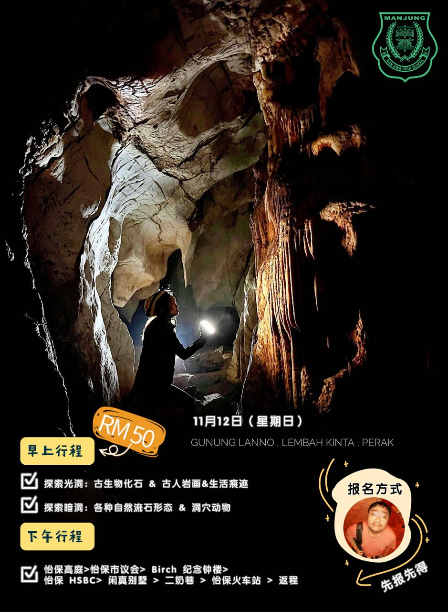
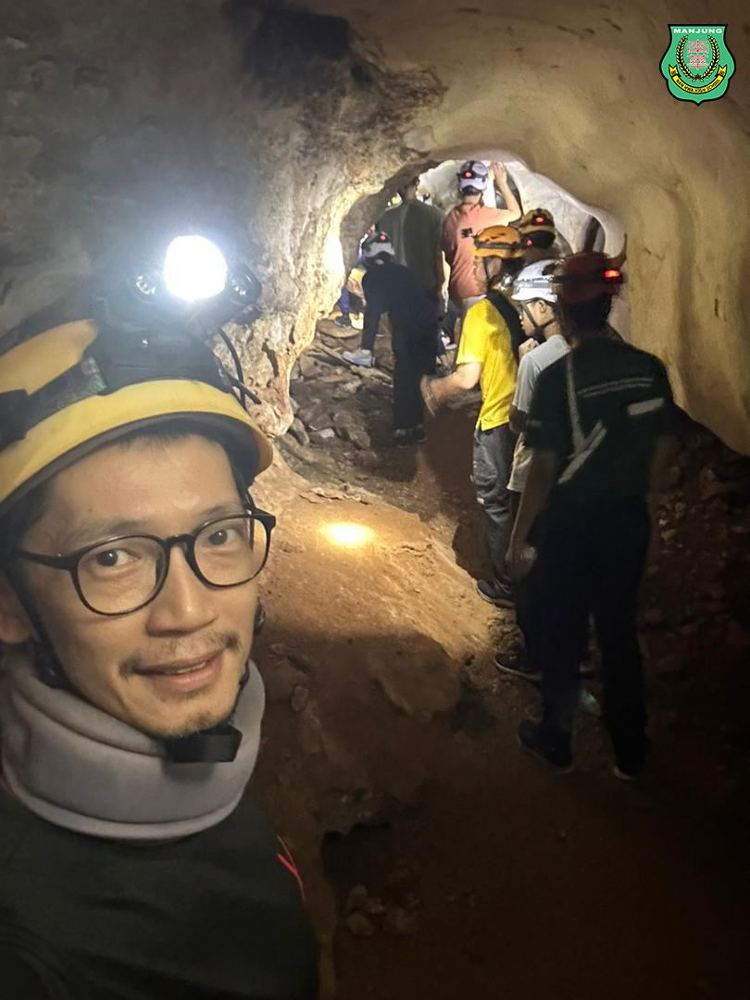
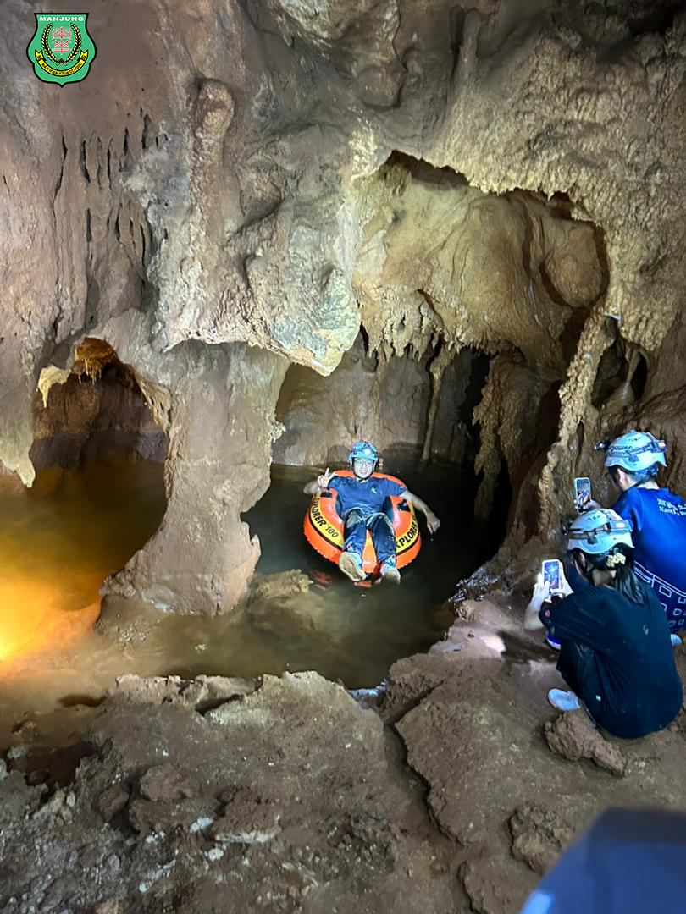
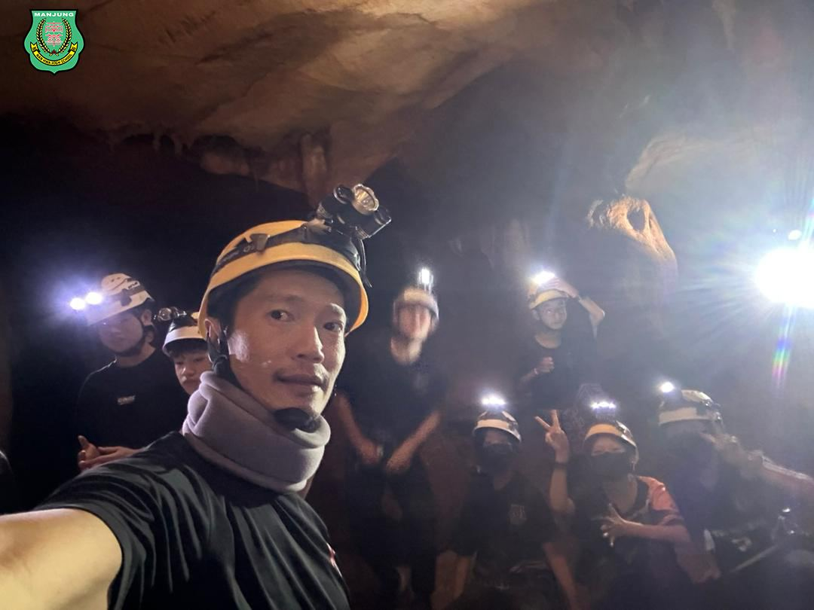
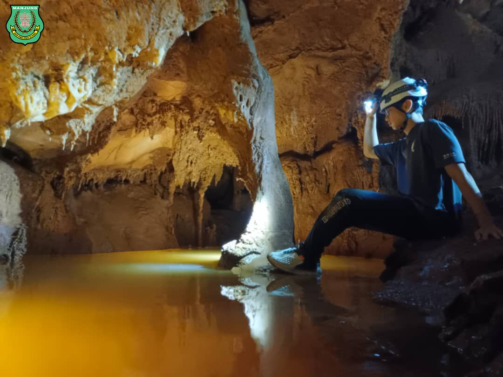
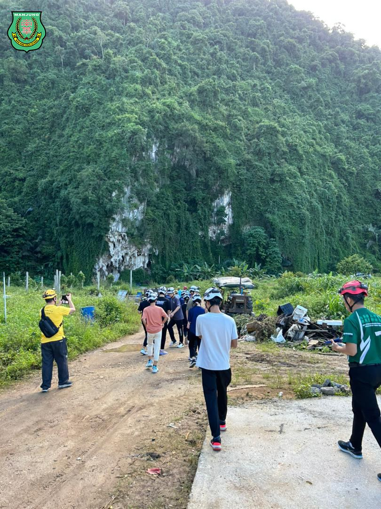
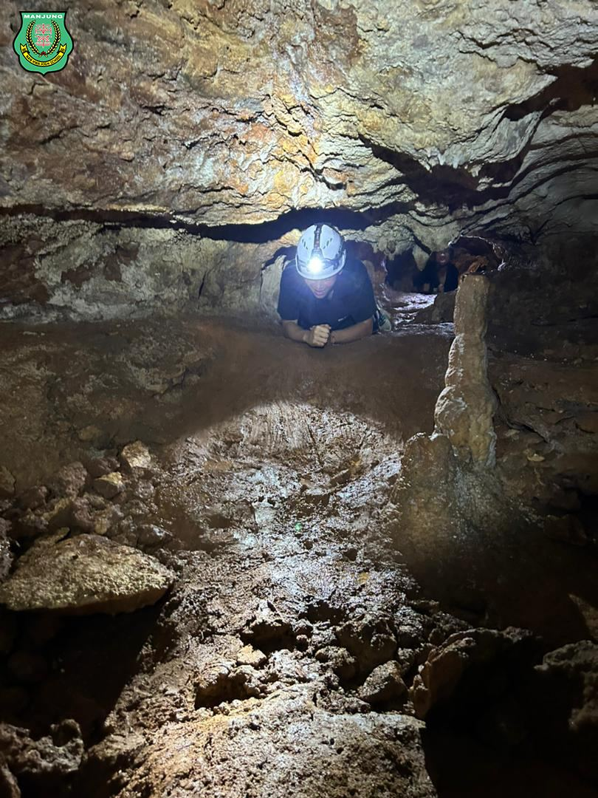
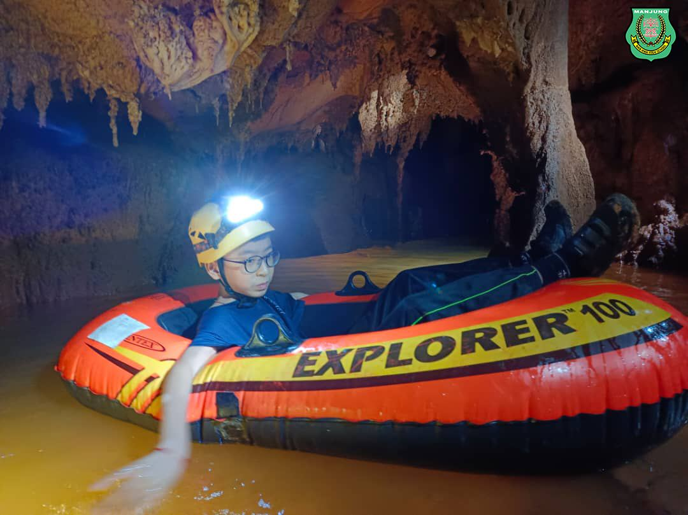

户外教学一日游之
户外教学一日游之
逍遥谷与英殖民时期建筑
南华学生亲身探索知识
本校学生在黄冠铭老师的带领下，积极参与了一场跨学科的户外教学活动。这次教学活动涵盖了地理、历史、人文和科学等多个学科领域，丰富多彩的行程使学生们在自然和历史的怀抱中汲取了丰富的知识。
活动的上午行程安排了参观近打逍遥谷，这个地方被分为探索光洞和探索暗洞两个部分。在探索光洞的过程中，学生们发现了古生物化石、古人岩画以及生活痕迹，丰富的自然景观让他们对地球的演变有了更深的认识。而在探索暗洞的活动中，学生们不仅欣赏到各种自然流石形态，还有机会近距离接触洞穴动物，这让他们对生态系统有了更直观的了解。下午的行程则是徒步游览怡保英殖民历史建筑，包括怡保高等法庭、怡保市议会、J. W. W. Birch纪念钟、闲真别墅、二奶巷和怡保火车站等地。这一系列的历史建筑带领学生们穿越时空，感受马来西亚的历史与文化。
南华独中的校长陈丽冰博士表示，学生们理应走出教室，深入大自然与外在世界中，以获取更广泛的知识。她认为这场户外教学能够激发学生的兴趣和好奇心，促使他们在自然环境中深入思考、学习和发现知识。陈博士强调，这种综合性的户外教学旨在培养学生跨学科的综合素养，使他们能够在不同学科领域之间建立联系，形成全面的认知和理解。此外，这次活动还注重培养学生的实地调研和观察能力，强调可持续发展与环境意识。
带队的地理老师黄冠铭表示，学生参与度显著提高。通过实地教学，学生们能够亲身体验所学知识的实际应用，从而激发他们的学习兴趣和主动参与意愿。他感叹地说，看到学生在户外活动中展现出的积极性和好奇心，作为老师感到鼓舞和满足。他观察到，在户外环境中，学生可能会面临一些挑战，但也有机会展现出解决问题的能力和团队协作精神。这让他对学生在户外环境中的成长和发展感到非常满意。
参与活动的近打古监测站负责人之一，郑文达，在导览后分享了他的感受。他表示作为导览员，有机会与学生分享关于近打逍遥谷地理与生态方面的知识，看到学生在实地环境中对这些知识产生兴趣，给予他一种教育工作的满足感和喜悦。他强调了导览员与学生之间的互动在户外教学中的重要性，能够回答学生提出的问题、与学生共同探索并分享知识，这种互动是一种特别的体验。
这次南华独中的户外教学活动为学生提供了一个丰富多彩的学习机会，不仅拓宽了他们的知识视野，同时培养了实地调研和观察能力，强调了可持续发展与环境意识。学生们在这次活动中不仅获得了知识，更收获了成长和团队协作的体验。
#户外教学 #一日游 #近打谷 #逍遥谷 #英殖民时期建筑
#南华独中 #曼绒 #实兆远







